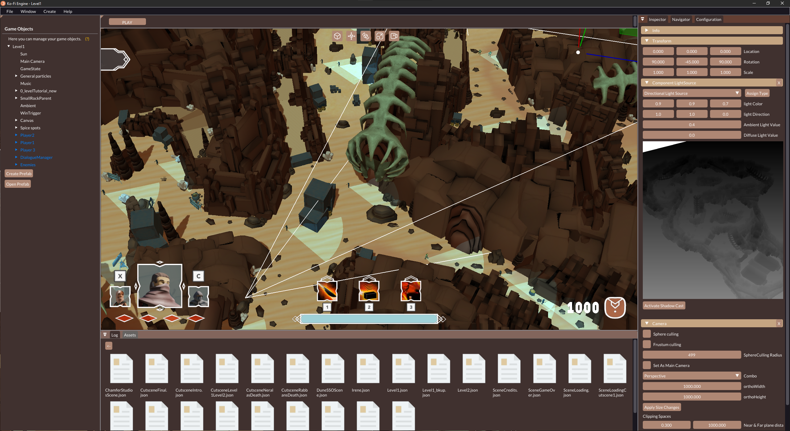

Ko-Fi Engine
My Role
During the development of the game engine, my role for the whole process was as engine programmer working on core functionality and systems needed to create the game Dune: Special Spice Ops.
About The Project
The Ko-Fi Engine project is a 3D game engine, the development of which started in February 2022 and has been improving in parallel to the development of the game. The Chamfer Studios programming team is the group of 11 university students that developed the engine up to the point it is today, with every member worked in a systenm of the engine. It started from a seed prototype from a previous course that this programming team developed later on. It was a laborious job we had to get off the ground to be able to create the Dune game. We worked in different branches from the GitHub repository that required weekly merges in order to be all up to date.
It features main systems of a 3D game engine, such as:
- Resource Manager
- Animation System
- Physics Engine
- Shaders
- Particle System
- Scripting with Lua
- NavMesh (AI)
- UI System
- Audio System
The tools, SDKs and libraries I have work with during the project are:
- STL (C++ Standard Template Library)
- OpenGL & Glew Extension
- SDL2 (Simple DirectMedia Layer)
- Assimp (Open-Asset-Importer-Library) for 3D models importing
- ImGui for the engine's UI
- OpenAL
- C++ JSON nlohmann
- Sol for C++ and Lua Binding
- STB Image

My Contributions

Data Structures & Importers
In the Ko-Fi Engine project, every data structure we created is called a "Resource" and
they are used for different purposes. These Resources are Meshes, Shaders, Textures &
Animations; and inherit from a parent class.
We needed to refactor the importing methods that were present in the prototype as they
required a better organization and more features. We went with a Singleton structure for
these importers as a convenience for the code quality.
To organize the engine scenes we used JSON files. This serialization takes care on
how the gameobjects are saved to these files, using virtual methods and avoiding trees
inside
the JSON by using UIDs for parenting these gameobjects.
Resource Manager
We programmed the engine system that takes care of the memory management of the
Resources used in scene. The manager is in charge of reading & updating the assets files
into the project folder whenever there is any change, this is achieved using
pairing between the asset file and a metadata file (.meta), like Unity does.
Moreover,
each type of supported Resource required a new file format in order to reduce reading
times by avoiding unncessary data. These new formats were formed of a header (to specify
the size and data types to read) and a body containing the raw data.
The stage of generating metadata files and manage them between programmers took major
part of the time. Using STL's maps we paired the asset UID
(which is global even in the version control) with its allocated memory, reducing
loading
times in scenes and optimizing memory usage by only allocating the asset's data once
when used in multiple instances.
In order to not use the modification time data from Windows that gave us serious issues
with
Git and the version control, I implemented a hashing method to know if a file has been
modified based on the
contents of it using the MD5 method.
Audio System
I completed the implementation of an audio system that supports the following gameobject components:
- Audio Source for single tracks/SFX.
- Audio Switch for multiple tracks that allows fade in and out between them.
The system uses the OpenAL library and the DrWav extension.